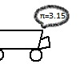

Raymond Feng

Projects
AsyPad
A simple drawing tool that can convert diagrams into Asymptote code.
Continued Fractions
Handout on continued fractions made for a math class I taught. Inspired by material covered at PROMYS. Here are the
slides
that go with the handout.